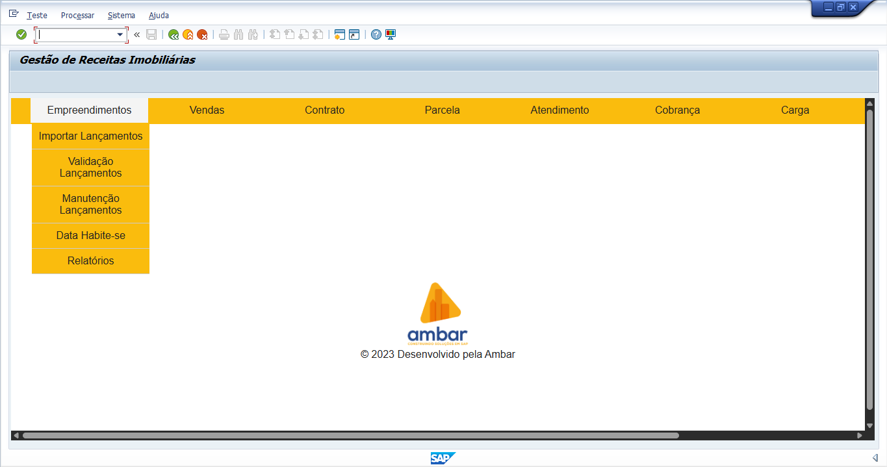
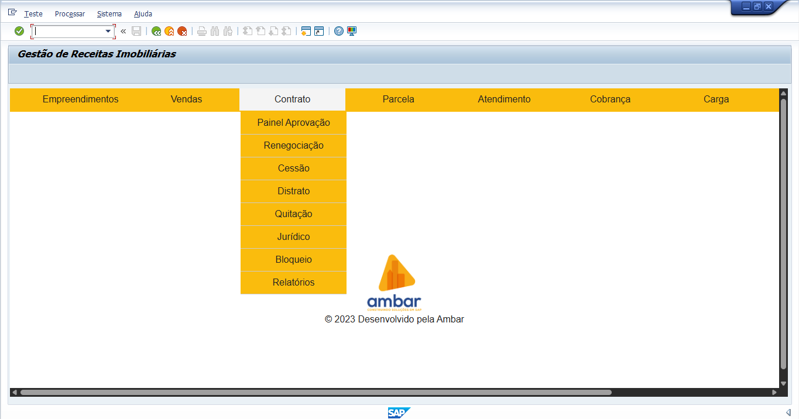
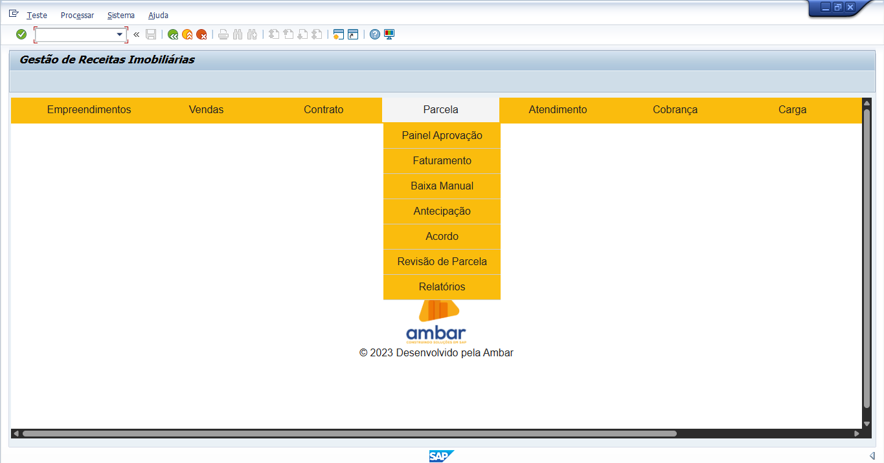
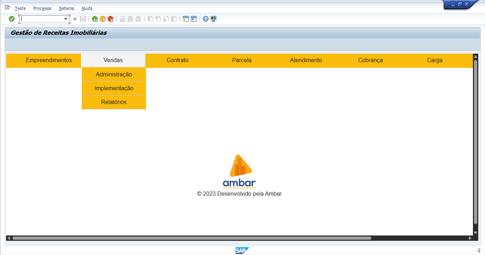
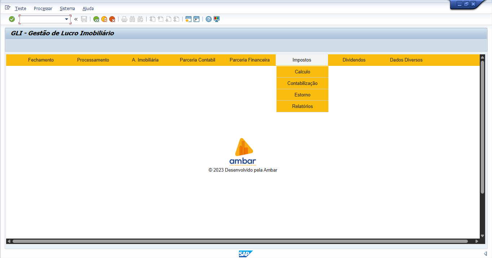

PLATAFORMA AMBAR — SAP
Uma plataforma.
Toda a gestão imobiliária.
Módulos especializados que conectam estoque, vendas, contratos, receitas, impostos e resultados em uma experiência integrada, segura e construída sobre o SAP.
SEU PRÓXIMO NÍVEL DE MERCADO IMOBILIÁRIO
Tecnologia especializada para transformar processos em decisões.
A Plataforma Ambar foi desenvolvida para atender aos desafios reais de incorporadoras e construtoras. Cada módulo atua em uma etapa crítica do empreendimento e compartilha informações em uma base única e confiável.

01 · GE
Gestão de Estoque Imobiliário.
Domine seu inventário imobiliário com precisão em tempo real.
Tenha uma visão completa das unidades imobiliárias em todos os estágios — disponíveis, reservadas, vendidas ou em distrato. Uma base única e confiável reduz riscos, elimina informações desencontradas e melhora a tomada de decisão.
Lançamento de empreendimentosConfigure e gerencie novos projetos com agilidade, desde a concepção.
Monitoramento das fasesAcompanhe cada unidade do planejamento à entrega.
Análise da posição do estoqueObtenha insights sobre disponibilidade e performance.
Controle de habite-se e fração idealGerencie prazos, documentos e cálculos essenciais.
02 · GV
Gestão de Vendas.
Acelere vendas e otimize sua estratégia comercial no SAP.
Integre a força comercial ao ERP SAP e unifique informações essenciais de todo o ciclo de vendas — da prospecção à formalização, passando por negociação, comissões e gestão de parceiros.
Administração de estoqueMantenha vendas e disponibilidade em perfeita sincronia.
Propostas e espelho de vendaPadronize negociações com clareza e agilidade.
Reservas, preços e parcelamentoAdapte ofertas às condições do mercado.
Corretores, imobiliárias e relatóriosAcompanhe performance, comissões e tendências.

03 · GRI.CON
Gestão de Receitas — Contratos.
Controle total e inteligência para sua carteira de contratos.
Gerencie contratos imobiliários por cliente e incorpore as particularidades de cada negociação ao SAP. O módulo automatiza eventos complexos, assegura auditabilidade e amplia a segurança jurídica da operação.
Painel de aprovaçãoFluxos rápidos e seguros para todas as etapas contratuais.
Renegociação e cessão de direitosAlterações precisas com cálculos automatizados.
Distrato e quitaçãoTransparência, aderência legal e conformidade financeira.
Jurídico e desembolsoControle integrado de litígios, bloqueios e pagamentos.

04 · GRI.PAR
Gestão de Receitas — Parcelas.
Automação para o ciclo completo das parcelas imobiliárias.
Do faturamento à conciliação bancária, gerencie parcelas em massa, antecipações, atrasos, correções e programas habitacionais. A inteligência de reconhecimento de crédito libera a equipe para atuar estrategicamente.
Aprovação e outras contrataçõesUnifique serviços adicionais ao contrato principal.
Faturamento e baixaEmissão em massa e conciliação bancária automatizada.
Antecipação, acordos e revisãoCalcule e processe alterações com segurança.
Programas e relatóriosReconheça repasses e analise dados financeiros e operacionais.

05 · GLI
Gestão do Lucro Imobiliário.
Visibilidade total da rentabilidade dos empreendimentos.
Automatize a apropriação imobiliária e obtenha uma visão precisa de custos e rentabilidade por empreendimento, fase, torre e unidade. O GLI acelera o fechamento e fortalece a transparência contábil.
Cálculo e contabilizaçãoApuração e registro automatizados do lucro.
Apuração fiscal e societáriaAderência a BRGAAP, USGAAP e IFRS.
Aging, AVP e comissãoCálculos complexos executados com precisão.
Curto e longo prazoClassificação clara de ativos e passivos.

06 · GCI
Gestão de Cálculo de Impostos.
Conformidade fiscal e otimização tributária com precisão.
Apure impostos e dividendos específicos do setor diretamente no SAP. O controle por regime tributário preserva a integridade das informações fiscais, reduz riscos e otimiza a carga tributária.
Impostos retidosApuração automática e precisa na fonte.
Resultados e financeirosCálculo de impostos sobre lucro e operações.
Lucro presumido e lucro realSuporte completo aos diferentes regimes.
RETCálculos específicos para RET 1 e RET 4.
UMA ÚNICA PLATAFORMA
Informações conectadas.
Gestão sem silos.
Os módulos compartilham dados e processos dentro do SAP, reduzindo retrabalho e oferecendo uma visão consistente de toda a operação imobiliária.
DESCUBRA A PLATAFORMA AMBAR